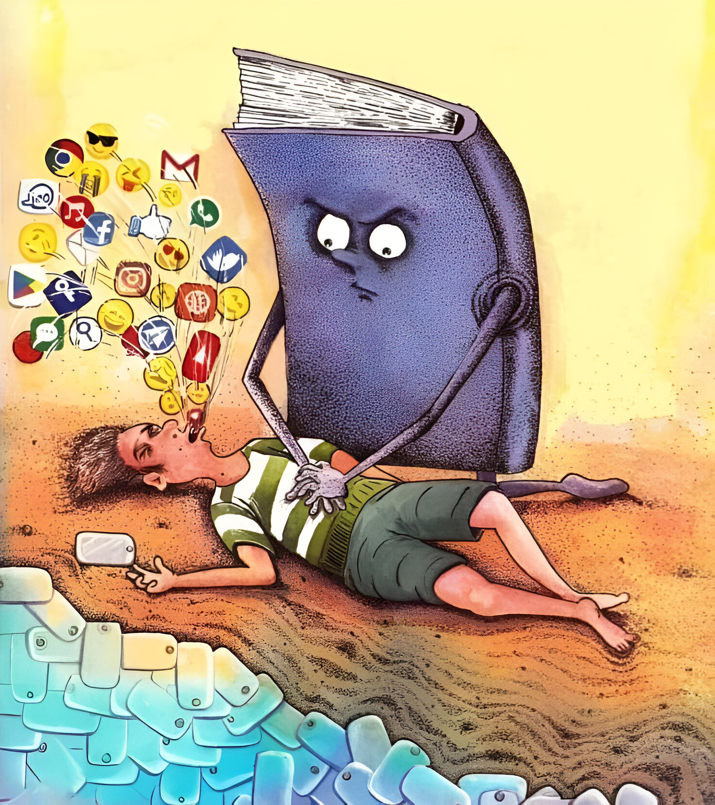

Shershaah
This Picture describes.....move your mouse here to view
The image captures a powerful and inspiring moment of a young soldier standing amidst a military camp, rallying his comrades before an impending battle. Dressed in a rugged combat uniform, he raises his right arm confidently, showcasing a sturdy wristwatch. His expression is dynamic and full of passion, with his mouth open in a loud, spirited shout that resonates with the energy of leadership. His stance exudes determination, as he motivates the soldiers gathered around him, creating an atmosphere of unity and readiness.
The background sets the scene with rugged mountains and tents, emphasizing the challenging environment of the camp. The lighting enhances the mood, with soft natural tones complementing the soldier's intense resolve. The overall tone of the image is one of camaraderie, strength, and the unwavering spirit of a leader preparing his team for a mission.
The background sets the scene with rugged mountains and tents, emphasizing the challenging environment of the camp. The lighting enhances the mood, with soft natural tones complementing the soldier's intense resolve. The overall tone of the image is one of camaraderie, strength, and the unwavering spirit of a leader preparing his team for a mission.

Technology
This Picture describes.....move your mouse here to view
The cartoon depicts a vivid and symbolic rescue scene. A distressed student is shown falling into a vast ocean, filled with colorful and chaotic icons of mobile apps, representing the overwhelming distractions of the digital world. The student appears anxious and helpless, struggling to stay afloat.
In a heroic act, a large, anthropomorphic book with arms and a friendly, determined face pushes the student up by their stomach, preventing them from sinking deeper into the ocean. The book stands as a metaphorical savior, symbolizing the power of knowledge and education to guide individuals out of the chaos of modern distractions.
The scene is lively and colorful, with a strong emotional undertone, emphasizing the importance of traditional learning in overcoming the overpowering influence of digital distractions.